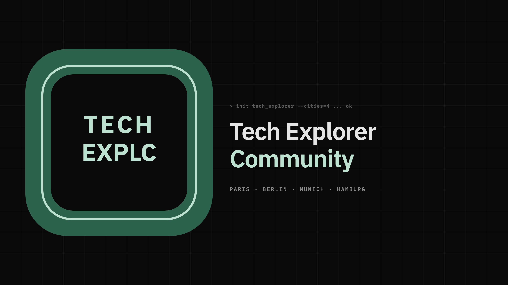

> load media/cover.png ... ok
Media · Cover · 16:9
Cover
Mostly black. The rounded mint mark is the Slack icon; the grid, the boot line and the four cities are the site.

> load media/cover.png ... ok
Mostly black. The rounded mint mark is the Slack icon; the grid, the boot line and the four cities are the site.
